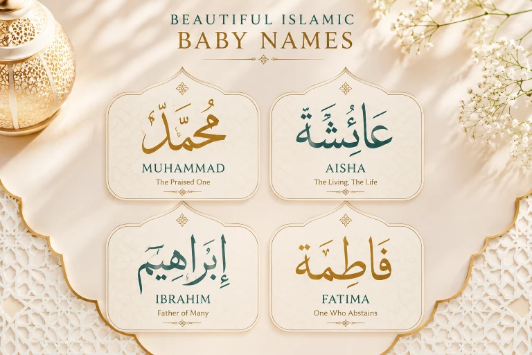

Choosing a name for your baby is one of the most important and beautiful decisions you'll make as a parent. In Islam, names carry deep meaning and can influence a child's identity throughout their life. The Prophet Muhammad (peace be upon him) said: "On the Day of Resurrection, you will be called by your names and by your fathers' names, so give yourselves good names." (Abu Dawud 4948). In this comprehensive guide, we have compiled 100+ beautiful Islamic baby names for boys and girls, complete with meanings, origins, and Islamic naming etiquette.
📖 In This Complete Guide, You'll Find:
- 50+ beautiful Islamic boy names with meanings and origins
- 50+ beautiful Islamic girl names with meanings and origins
- Names from the Quran, Prophets, and Sahaba (Companions)
- Modern Islamic names that are easy to pronounce worldwide
- Islamic naming etiquette and the Sunnah of naming your baby
- Important guidelines on what names to avoid in Islam
🔑 Key Takeaways
- Choose names with positive, meaningful definitions connected to Islamic values.
- Names of prophets and righteous people are highly recommended in Islam.
- Avoid names with negative meanings or servitude to other than Allah.
- Consider ease of pronunciation in both Muslim and non-Muslim countries.
- The best names are those that reflect good character and devotion to Allah.
📑 In This Article
Why Islamic Names Matter
In Islam, a name is not just a label — it's a prayer, an identity, and often a reflection of the values you want to instill in your child. The Prophet Muhammad (peace be upon him) emphasized the importance of good names, and many scholars note that a person can be influenced by the meaning of their name.
The Prophet (PBUH) said: "The most beloved of your names to Allah are Abdullah and Abdur-Rahman."
— Sahih Muslim 2132The Sunnah of Naming
According to Islamic tradition:
- Timing: It's recommended to name the baby on the 7th day after birth, though naming on the day of birth is also permissible.
- Aqiqah: The naming ceremony is often combined with the Aqiqah (sacrifice on the 7th day).
- Good Meaning: Always choose names with beautiful, positive meanings.
- Prophetic Names: Names of prophets and righteous people are especially beloved.
Before finalizing a name, research its meaning thoroughly in Arabic. Some names that sound beautiful may have meanings you wouldn't want for your child. Always verify with reliable Islamic sources.
50+ Islamic Boy Names with Meanings
Here are beautiful Islamic names for boys, including names from the Quran, prophets, Sahaba, and modern options:
Names from the Quran & Prophets
Muhammad
محمد"The Praised One" — Most beloved name to Allah
Ibrahim
إبراهيم"Father of Nations" — Name of Prophet Abraham
Yusuf
يوسف"Allah Increases" — Name of Prophet Joseph
Musa
موسى"Saved from Water" — Name of Prophet Moses
Isa
عيسى"Allah is Salvation" — Name of Prophet Jesus
Yahya
يحيى"He Lives" — Name of Prophet John
Adam
آدم"Man, Earth" — First Prophet of Allah
Nuh
نوح"Rest, Comfort" — Name of Prophet Noah
Names of the Sahaba (Companions)
Abdullah
عبد الله"Servant of Allah" — Most beloved name to Allah
Abdur-Rahman
عبد الرحمن"Servant of the Most Merciful" — Second most beloved
Umar
عمر"Life, Long-lived" — Name of second Caliph
Ali
علي"High, Exalted" — Name of fourth Caliph
Uthman
عثمان"Baby Bustard" — Name of third Caliph
Bilal
بلال"Moisture, Water" — First Muezzin of Islam
Hamza
حمزة"Lion, Strong" — Uncle of Prophet Muhammad
Talha
طلحة"Fruitful Tree" — Companion promised Paradise
Modern Islamic Names
Ahmed
أحمد"Most Praised" — Another name of Prophet Muhammad
Rayyan
ريان"Watered, Luxuriant" — Gate of Paradise for those who fast
Zayn
زين"Beauty, Grace" — Modern and meaningful
Idris
إدريس"Interpreter, Studious" — Name of a Prophet
Amir
أمير"Prince, Commander" — Strong Islamic name
Kareem
كريم"Generous, Noble" — One of Allah's attributes
Samir
سمير"Companion in Evening Talk" — Friendly and warm
Zaid
زيد"Abundance, Growth" — Companion of the Prophet

50+ Islamic Girl Names with Meanings
Beautiful Islamic names for girls, including names from the Quran, female companions, and modern options:
Names from the Quran
Maryam
مريم"Exalted, Beloved" — Mother of Prophet Isa (AS)
Aisha
عائشة"Living, Prosperous" — Wife of Prophet Muhammad
Fatima
فاطمة"One who Abstains" — Daughter of Prophet Muhammad
Khadija
خديجة"Premature Child" — First wife of Prophet Muhammad
Zaynab
زينب"Fragrant Flower" — Daughter of Prophet Muhammad
Hafsa
حفصة"Lioness" — Wife of Prophet Muhammad
Safiyya
صفية"Pure, Best Friend" — Wife of Prophet Muhammad
Asiya
آسية"Healer, Nurse" — Wife of Pharaoh who believed in Musa
Names with Beautiful Meanings
Amira
أميرة"Princess, Leader" — Feminine form of Amir
Aaliyah
عالية"Exalted, Sublime" — Reflects high status
Nadia
نادية"Tender, Delicate" — Easy to pronounce worldwide
Layla
ليلى"Night, Dark Beauty" — Classic Arabic name
Sara
سارة"Pure, Happy" — Wife of Prophet Ibrahim
Hana
هناء"Happiness, Bliss" — Simple and beautiful
Jannah
جنة"Paradise, Garden" — Name of Paradise in Islam
Yasmin
ياسمين"Jasmine Flower" — Fragrant and beautiful
Modern Islamic Girl Names
Aziza
عزيزة"Powerful, Respected" — Feminine form of Aziz
Inaya
عناية"Care, Concern" — Modern and meaningful
Karima
كريمة"Generous, Noble" — Feminine form of Kareem
Lina
لينا"Tender, Soft" — Easy to pronounce
Maha
مها"Beautiful Eyes" — Classic Arabic name
Noura
نورة"Light, Illumination" — Feminine form of Nour
Rania
رانيا"Queen, Gazing" — Elegant and regal
Tasneem
تسنيم"Spring in Paradise" — Name of a fountain in Jannah
How to Choose an Islamic Name
Choosing the perfect Islamic name for your baby is both an art and a responsibility. Here are important guidelines:
✅ What to Look For:
- Good Meaning: The name should have a positive, beautiful meaning that reflects Islamic values.
- Prophetic Connection: Names of prophets and righteous people are highly recommended.
- Easy Pronunciation: Consider how easy it is to pronounce in your country.
- Cultural Fit: Balance between Islamic identity and cultural integration.
- Uniqueness: Choose a name that's distinctive but not too unusual.
❌ What to Avoid:
- Names of False Gods: Avoid names that mean servitude to anything other than Allah.
- Negative Meanings: Avoid names with meanings related to sin, darkness, or evil.
- Arrogant Names: Avoid names like "King of Kings" or "Judge of Judges".
- Exclusive to Other Religions: Avoid names exclusively associated with other faiths.
- Hard to Spell: Avoid names that will cause constant confusion.
Before finalizing, say the name out loud with your surname. Make sure it flows well and doesn't create any awkward combinations. Also, check if the initials spell anything inappropriate.
The Sunnah of Naming Your Baby
Follow these Islamic practices when naming your child:
When to Name:
- Day of Birth: Permissible to name immediately.
- 7th Day: Recommended (combined with Aqiqah).
- Before 7th Day: Also permissible if needed.
During Aqiqah:
- Sacrifice an animal (2 for boys, 1 for girls).
- Shave the baby's head.
- Give charity equal to the weight of hair in silver/gold.
- Announce the name publicly.
Making Dua: When choosing a name, make istikhara (prayer for guidance) and ask Allah to help you choose a name that will be a source of blessing for your child.
Names to Avoid in Islam
Be aware of these categories of names that should be avoided:
Abdul-Nabi (Servant of the Prophet), Abdul-Ka'bah (Servant of the Ka'bah), Abdul-Hussain. These should be changed to Abdullah, Abdur-Rahman, etc.
Malik al-Amlak (King of Kings), Qadi al-Qudat (Judge of Judges). The Prophet (PBUH) said Allah will be most angry with such names on Judgment Day.
Harb (War), Murrah (Bitter), Hizn (Sadness). Choose names that inspire positivity instead.
Frequently Asked Questions
🌱 Choose a Name That Will Be a Blessing
Your child's name is one of the first gifts you give them. Choose wisely, pray over it, and may Allah make it a source of barakah (blessing) in their life.
Which name resonated with you most? Share in the comments!
Final Thoughts
Choosing an Islamic name for your baby is both a beautiful responsibility and a wonderful opportunity to instill Islamic values from the very beginning. Whether you choose a name from the Quran, a prophet's name, a Sahabi's name, or a modern Islamic name with beautiful meaning, remember that the best names are those that remind us of Allah and inspire good character. May Allah bless your child with a name that brings them honor in this life and the next, and may they live up to the beautiful meaning of their name. Ameen.